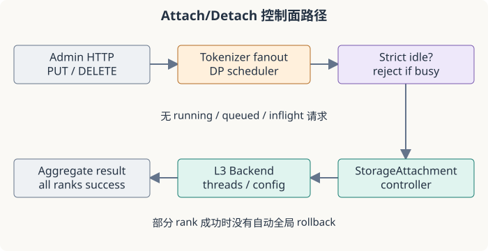
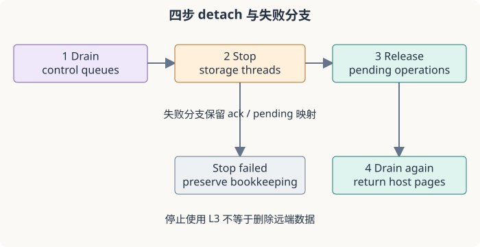

第 54 章 · SGLang 内核与存储
HiCache Dynamic Storage：运行时 Attach/Detach 与一致性门禁
怎样在不重启的前提下安全切换 L3 后端，避免未完成写入、host lock 泄漏与 DP 状态分裂？
怎样在不重启的前提下安全切换 L3 后端，避免未完成写入、host lock 泄漏与 DP 状态分裂？
1. 热切换不等于带请求切换
HiCache L3 可在进程运行时 attach/detach，但官方严格要求服务 idle：没有 running 或 queued requests，包括 chunked/overlap/PP/PD 和 grammar、bootstrap、inflight 等路径。先 upstream drain，待所有 scheduler idle 再操作。忙碌时拒绝，不能用重试覆盖安全门。
2. 控制路径与权限
HTTP PUT/DELETE/GET /hicache/storage-backend，经 TokenizerManager fanout、Scheduler idle check、UnifiedRadixCache、StorageAttachment/HiCacheController，创建或销毁 backend 与 worker threads。端点要求 admin bearer key，普通 API key 不接受；示例只描述接口，不提供或记录密钥。

3. DP 非事务语义
DP>1 将请求 fanout 到所有 scheduler，聚合 success=AND(rank success)。若 rank0 已 attach 而 rank1 失败，整体失败但 rank0 仍可能附着。没有自动跨 rank rollback；按官方建议在 idle 下 best-effort detach、核对各 rank 状态、修复再 retry。
4. Detach 的四步顺序
StorageAttachment.detach 先 drain control queues，保留 ack 对应关系；再 stop backend threads；停止后释放 remaining pending prefetch/backup；再次 drain 将 host pages 归还 pool。若停止线程失败，保留 ongoing bookkeeping 以便 retry。后续 cleanup 异常日志记录，因此 success 不能证明全部资源无泄漏，需额外观测。

5. 后端配置与数据生命周期
backend config JSON 包括 storage-specific options 和 prefetch threshold/timeout。Mooncake 等仍要求兼容 host KV layout。Detach 只是停止使用，不删除远端存储数据。重新 attach 也不保证所有旧数据仍兼容当前模型、布局、namespace。区分 backend connection、metadata、L2 pages 与持久化 L3 objects。
6. 工程状态机
教学模型 OFF→ATTACHED→DRAINING→OFF；若线程未停，留在可重试状态且不提前清除 inflight map。业务端恢复流量之前核查 all ranks backend status、metrics 与 probe 请求，避免新请求落在分裂配置。官方 API 不宣称事务式回滚。
7. 验收矩阵
忙碌拒绝、全 idle attach、配置非法、DP partial success、detach idempotency、thread join failure、pending ack/host lock、远端 data retention、再次 attach。真实 backend 需要存储和多 rank 环境，CPU lab 只检查门禁与顺序。
8. 交互：逐步检查机制
HiCache Runtime Storage 教学实验
Busy：存在排队请求：拒绝 attach，无状态变更。
DP partial：rank0 success、rank1 fail：aggregate false，不能假定全 rollback。
Detach：drain → stop → release → drain；stop fail 时保留 bookkeeping。
教学模型仅验证机制与反例，不代表实测性能。
9. CPU 最小实验
storage_lifecycle.py 使用 Python 标准库，可独立执行。
python3 examples/storage_lifecycle.py不执行实际 GPU、网络、云存储或集群操作。
10. 源码阅读路线与证据
固定上游快照 0fde0356cc44bca9a7727a3a2e2c2d10cd5bd30f，区分实现、推导与教学示例。
- Architecture / Idle-state requirement：Runtime attach/detach requires strict idle and admin authorization.
- DP semantics：All DP responses aggregate; partial success is possible and automatic cross-rank rollback is absent.
- StorageAttachment.attach：Attach creates/configures the storage attachment.
- StorageAttachment.detach：Drain control queues, stop threads, release pending operations, drain again; thread-stop failure preserves bookkeeping.